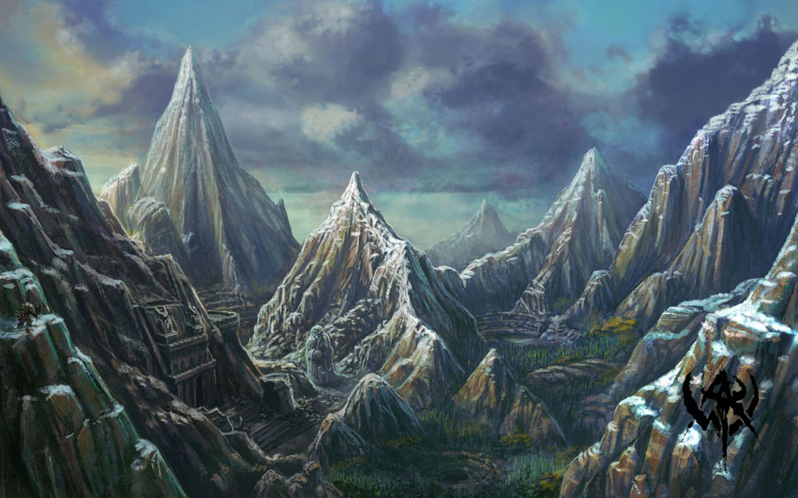
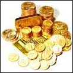
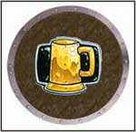
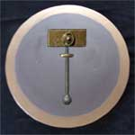
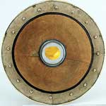

ACCESSO ALLE VARIE RAZZE
Nella campagna Le Gole di Rocciadura ogni giocatore può scegliere una razza tra le seguenti tirando 1d20. Ovviamente potranno sempre essere scelte razze corrispondenti a punteggi inferiori a quello tirato. Un giocare, inoltre, aumentare il tiro effettuato di un punto per ogni punto creazione utilizzato fino ad un ammontare massimo pari a cinque incrementi.
RISULTATO DA 1 A 13

ed esclusivamente per chi scelga un personaggio della Macroclasse Wizard oppure non riesca ad ottenere i minimi razziali per un Nano del Massiccio:

RISULTATO DA 14 A 15

RISULTATO DA 16 A 17


RISULTATO DA 18 A 19


RISULTATO 20


ACQUISIRE FAMA PRESSO ROCCIADURA
Nella roccaforte di Rocciadura è possibile accumulare fama svolgendo missioni per il clan reggente e raggiungendo specifici obiettivi.
In particolare la risoluzione di una missione farà ottenere a tutti i partecipanti un ammontare di punti fama che dipende dalla difficoltà della stessa, da un fattore casuale e dal punteggio di carisma posseduto. A titolo esemplificativo l'ammontare di punti fama che mediamente possono essere assegnati per una missione essendo dipendenti dalla difficoltà della stessa (valutata non in senso assoluto ma in relazione al numero di personaggi partecipanti) può essere così schematizzato:
| DIFFICOLTA' DELLA MISSIONE | PUNTI FAMA | BONUS CASUALE | BONUS CLAN REGGENTE |
| Facile | 6 - 7 | 1d3 | +1 |
| Impegnativa | 8 - 10 | 1d6 | +2 |
| Difficile | 11 - 14 | 1d8 | +3 |
| Eroica | 15 - 20 | 1d10 | +5 |
Si noti che il bonus casuale deve essere tirato singolarmente per ogni personaggio partecipante. Si noti che le missioni possono prevedere bonus /malus di punti fama per lo svolgimento di compiti particolari o per lo svolgimento della missione in particolari modalità o tempi. Al risultato finale il personaggio dovrà applicare il modificatore in punti fama previsto dal reaction adjustment del proprio punteggio di carisma.
A questo punto deve essere inserito il modificatore dovuto alla classe sociale di appartenenza del personaggio:
| CLASSE SOCIALE DI APPARTENENZA | MODIFICATORE NANI DEL MASSICCIO | MODIFICATORE POPOLAZIONI ESTERNE |
| Origini Infime | - 2d3 punto fama | - 2d4 punti fama |
| Origini Umili | - 1d3 punto fama | - 1d4 punto fama |
| Origini Modeste | - 1 punto fama | - 1d2 punti fama |
| Origini Comuni | Nessun Modificatore | Nessun Modificatore |
| Origini Borghesi | + 1d2 punti fama | + 1 punto fama |
| Origini Altolocate | + 1d4 punti fama | + 1d2 punti fama |
| Origini Nobiliari - Cavalierato | + 1d6 punti fama | + 1d3 punti fama |
| Origini Nobiliari - Piccolo Vassallo | + 2d4 punti fama | + 2d3 punti fama |
| Origini Nobiliari - Vassallo | + 2d6 punti fama | + 2d4 punti fama |
| Origini Nobiliari - Grande Vassallo | + 3d6 punti fama | + 3d4 punti fama |
| Origini Nobiliari - Famiglia Sorvana | + 4d6 punti fama | + 3d6 punti fama |
Si noti che, indipendentemente dai modificatori negativi applicabili, una missione risolta con successo garantirà sempre e comunque un ammontare minimo di punti fama come indicato nella seguente tabella:
| DIFFICOLTA' DELLA MISSIONE | PUNTI FAMA MINIMI |
| Facile | 2 |
| Impegnativa | 3 |
| Difficile | 4 |
| Eroica | 5 |
FALLIMENTO DELLA MISSIONE
Nel caso in cui i personaggi che hanno accettato una missione non riescano a portarla a termine costoro perderanno un ammontare di fama pari ai punti fama base che avrebbero guadagnato per la sua risoluzione (non si considereranno, quindi, gli altri punteggi bonus dovuti). Si noti che è possibile ad un punteggio negativo di punti fama.
ACQUISIZIONE DI FAMA TRAMITE DONAZIONI
Nella roccaforte di Rocciadura può essere acquisita fama attraverso donazioni alla causa nanica. Queste donazioni possono essere effettuate al clan reggente o al tempio di Srodan. L'ammontare complessivo delle donazioni che il personaggio ha effettuato ogni anno solare determina l'ammontare di punti fama acquisiti. Per ottenere la fama prevista occorre raggiungere l'ammontare di donazione richiesta nel corso dell'anno solare anche se tale ammontare può essere raggiunto attraverso diverse donazioni minori. Se un personaggio non raggiunge una soglia determinata nella seguente tabella, le eventuali donazioni superiori alla soglia precedente non daranno luogo all'ottenimento di alcun punto fama supplementare. I punti fama saranno acquisiti soltanto alla fine di ogni anno solare.
| AMMONTARE DONATO | PUNTI FAMA ACQUISITI |
| 100 monete d'oro |
1d2 punti fama |
| 500 monete d'oro | 2d3 punti fama |
| 1.000 monete d'oro | 2d6+3 punti fama |
| 2.500 monete d'oro | 5d6+5 punti fama |
| 5.000 monete d'oro | 7d10+10 punti fama |
| 10.000 monete d'oro | 5d20+50 punti fama |
Per fare un esempio, se un personaggio effettua una donazione da 100 monete d'oro oppure una o più donazioni per un ammontare complessivo pari a 300 monete d'oro lo stesso riceverà in ogni caso unicamente 1d2 punti fama. Solo le donazioni complessive del personaggio nel corso dell'anno solare raggiungono la quota di 500 monete d'oro, infatti, costui acquisirà alla fine dell'anno 2d3 punti fama in luogo dei previsti 1d2 punti fama per la quota inferiore.
ACQUISIZIONE DI FAMA SPECIFICA
Nella roccaforte di
Rocciadura può essere acquisita (o persa) fama specifica ossia legata alle
specifiche mansioni lavorative svolte dal personaggio.
CHIERICI DI SRODAN:
Mancato raggiungimento del numero minimo di controversie risolte annualmente:
- 20 punti fama
Per ogni Giudizio
Contraddittorio od Erroneo
ottenuto nel risolvere una controversia: - 2d6 punti fama
Per ogni Giudizio di Modesta
Entità ottenuto nel
risolvere una controversia: - 1d6 punti fama
Risoluzione di tutte le controversie presentatesi nel corso dell'anno:
10 punti fama
Per ogni Giudizio Equo ed
Autorevole ottenuto nel
risolvere una controversia: 1d4 punti fama
Per ogni Perla di Saggezza ottenuta nel risolvere una controversia:
1d6+2 punti fama
Punti Fama da
utilizzare per divenire
Custode delle Sacre Rune: 50 punti fama
Punti Fama da utilizzare per divenire
Maestro della Sacra Roccia:
100 punti fama
UTENTI DI MAGIA:
Per ogni 30 giorni in cui il mago resta a disposizione presso Rocciadura per
vendere incantesimi: 1d6 punti fama
RICOMPENSE DI ROCCIADURA
(LIVELLO MEDIO-AVANZATO)

Una volta raggiunto un determinato ammontare di punti fama il personaggio potrà richiedere una determinata ricompensa al clan reggente di Rocciadura. Una volta scelta la ricompensa il personaggio perderà i punti fama relativi al suo valore. Le ricompense normalmente assegnate dal clan a chi effettua missioni in suo conto sono le seguenti:
5
Punti Fama - Sacca di Gemme Ornamentali - Al
personaggio viene consegnata una sacchetta contenente 1d6+4 gemme ornamentali di
valore determinato casualmente.
10 Punti Fama - Ricompensa in
Denaro - Al personaggio vengono consegnate 500 monete d'oro. Su tale
ricompensa il clan reggente esenterà il personaggio dal pagamento delle tasse
(dovranno essere pagate eventuali altre tasse come quelle dovute per la fedeltà
ai culti religiosi).
5-18 Punti Fama - Armi di
Rocciadura - Al personaggio viene consegnata un'arma superba forgiata in
Adamantium appartenente ad una delle seguenti tipologie:
Two Handed Battle Axe
(18 Punti Fama),
One Handed Battle Axe
(12 Punti Fama),
Dwarven Hammer
(10 Punti Fama),
Throwing Axe
(5 Punti Fama).
25 Punti Fama - Sacca di Gemme Preziose - Al personaggio viene consegnata una sacchetta contenente 1d6+4 gemme preziose di valore determinato casualmente.
8-30 Punti Fama - Squame di Alitofreddo - Al personaggio viene consegnata una pelle non lavorata di Drago Bianca delle seguenti categorie di età: Categoria III (8 Punti Fama), Categoria V (20 Punti Fama), Categoria VII (30 Punti Fama).
50 Punti Fama - Rendita Vitalizia - Al personaggio viene riconosciuta una rendita vitalizia pari a 75 monete d'oro al mese. Si noti che ogni personaggio può scegliere al massimo due volte questa ricompensa. Su tale ricompensa il clan reggente esenterà il personaggio dal pagamento delle tasse (dovranno essere pagate eventuali altre tasse come quelle dovute per la fedeltà ai culti religiosi).
100 Punti Fama - Sacca di Gemme Rare - Al personaggio viene consegnata una sacchetta contenente 1d6+4 gemme rare di valore determinato casualmente.
RICOMPENSE SPECIALI
(LIVELLO MEDIO-AVANZATO)
Le ricompense speciali
sono ricompense che variano di anno in anno. Si tratta di ricompense uniche che
possono, quindi, essere acquisite una sola volta. In alcuni casi, inoltre,
queste ricompense sono sottoposte ad una data di scadenza. Trascorso tale
periodo di tempo senza che nessun personaggio le ha reclamate le ricompense
scadute saranno eliminate.
200 Punti Fama - Scadenza: fine anno 198 p.n. -
Dwarven Ring of Granite (link)
30 Punti Fama - Scadenza: nessuna -
Barile di Birra Nanica della Resistenza, il
contenuto del barile è sufficiente a riempire 10 calici di questa birra nanica
incantata. (link)
CLAN DI ROCCIADURA
Ogni personaggio della razza Nano del Massiccio deve tirare 1d100 per determinare il clan di appartenenza:
(1-40)
GOLDCUP 
Il Clan Goldcup è il clan numericamente più
numeroso di Rocciadura. Gli
appartenenti a questo clan rappresentano circa il 40% dei nani di Rocciadura.
I suoi membri rappresentano
i tipici appartenenti alla razza dei Nani del Massiccio, coraggiosi ed amanti
della birra.
(41-75) BRONZEHAMMER

Il Clan Bronzehammer è un
clan di guerrieri e fabbri. Gli appartenenti a questo clan rappresentano circa
il 35% dei nani di Rocciadura. Al suo interno possono annoverarsi i
migliori fabbri di Rocciadura.
BENEFICI SPECIALI
* Il costo della ricompense Armi di Rocciadura è ridotto di
2
Punti Fama (per la
Throwing Axe di 1
Punto Fama).
(76-100) GOLDSTONE

Il Clan Goldstone è un clan di minatori. Gli appartenenti a questo clan rappresentano circa il 25% dei nani di Rocciadura. Al suo interno possono annoverarsi i migliori minatori ed intagliatori di gemme di Rocciadura. Per tale motivo si tratta del clan più ricco, in proporzione, rispetto agli altri.
BENEFICI SPECIALI
* Ogni Ricompensa in Denaro ottenuta è pari a 650
monete d'oro.
* Ogni
Rendita Vitalizia ottenuta è pari a 100 monete d'oro mensili.
DETERMINAZIONE DEL CLAN REGGENTE
All'inizio di ogni anno
uno dei clan assurge al rango di clan reggente di Rocciadura. Il clan reggente è
determinato in base al contributo positivo apportato da tutti i suoi membri alla
comunità di Rocciadura. Per determinare quale sia il clan reggente dovrà
effettuarsi un tiro comparativo. Ogni clan tirerà 1d20 ed aggiungerà a tale tiro
il valore base del clan:
GOLDCUP +9
BRONZEHAMMER +6
GOLDSTONE +5
Prima che sia
effettuato tale tiro i personaggi appartenenti ad un clan potranno influenzarlo
donando alcuni dei propri punti fama. Ogni 3 punti fama donati al clan lo stesso
riceverà un bonus di +1 al tiro. Ogni personaggio può donare al proprio clan un
massimo di 9 punti fama.
BENEFICI DEL CLAN
REGGENTE
* Tassazione Agevolata : Tutti i membri del clan
reggente saranno tassati al 5% (contro il 10% dei membri degli altri clan ed il
15% dei residenti non appartenenti ad alcun clan).
*
Favoritismo : I membri del clan reggente riceveranno un bonus speciale in
punti fama.
TASSAZIONE DI ROCCIADURA
Tutti i residenti a Rocciadura sono tenuti al pagamento delle seguenti tasse:
TASSA SUL RICAVO LORDO
Popolazioni Esterne
:
15%
Nani
del Massiccio :
10%
Nani
del Massiccio - Tassazione Agevolata :
5%
TASSA SULLA MAGIA
Questa tassa va pagata all'inizio di ogni anno solare.
Pergamene
: Nessuna imposizione fiscale
Pozioni e Liquidi Magici
: 5% del valore di
mercato
Oggetti Magici : 2,5%
del valore di mercato